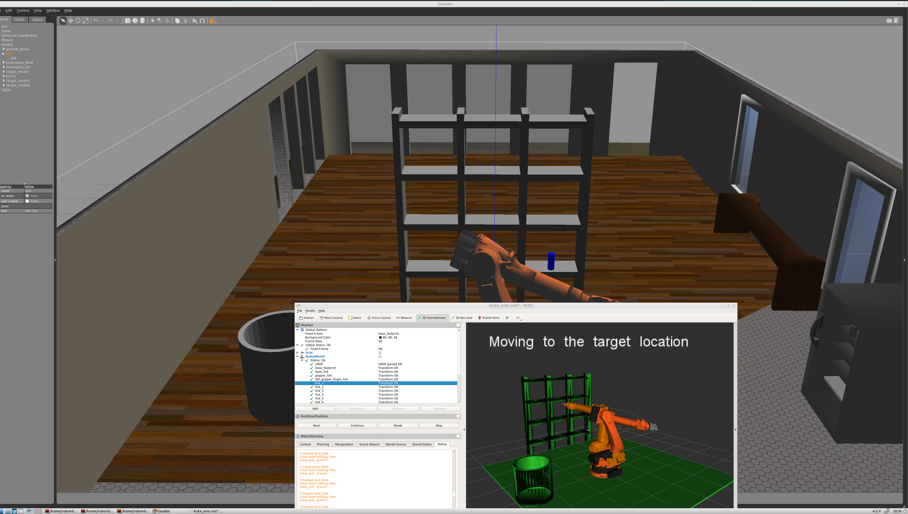
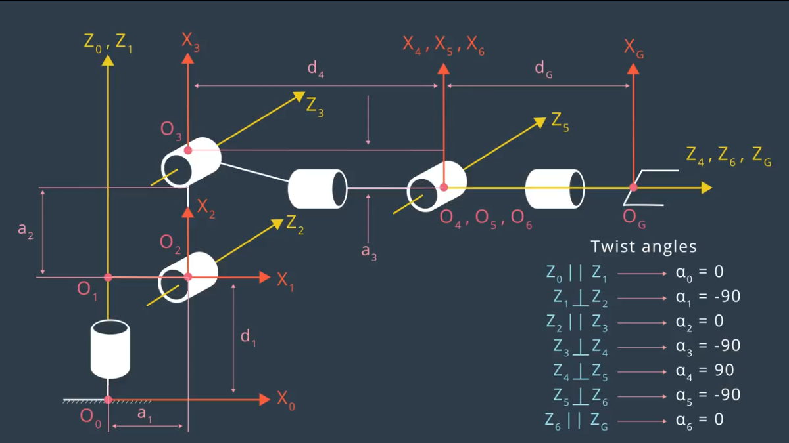
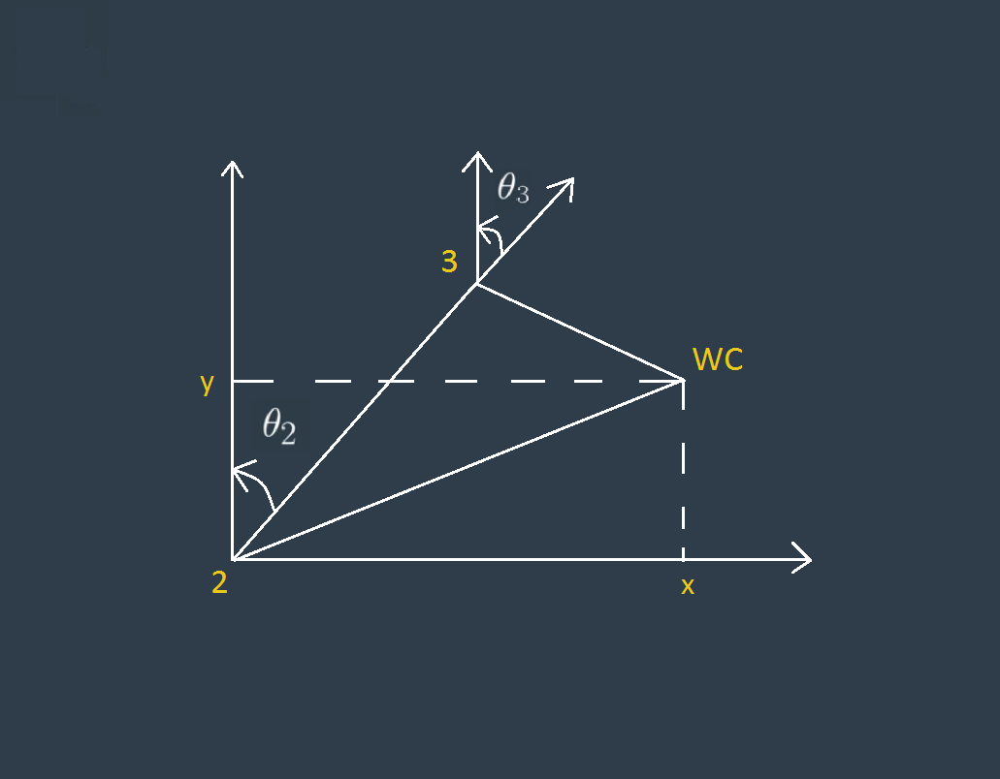
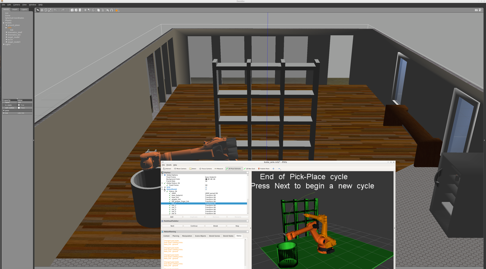

Project: Kinematics Pick & Place
Writeup Template: You can use this file as a template for your writeup if you want to submit it as a markdown file, but feel free to use some other method and submit a pdf if you prefer.
Steps to complete the project:
- Set up your ROS Workspace.
- Download or clone the project repository into the src directory of your ROS Workspace.
- Experiment with the forward_kinematics environment and get familiar with the robot.
- Launch in demo mode.
- Perform Kinematic Analysis for the robot following the project rubric.
- Fill in the
IK_server.py with your Inverse Kinematics code.
Here I will consider the rubric points individually and describe how I addressed each point in my implementation.
Writeup / README
1. Provide a Writeup / README that includes all the rubric points and how you addressed each one. You can submit your writeup as markdown or pdf.
You're reading it!
Kinematic Analysis

| links |
alpha(i-1) |
a(i-1) |
d(i-1) |
theta(i) |
| 0->1 |
0 |
0 |
0.75 |
q1 |
| 1->2 |
{-pi/2} |
0.35 |
0 |
{-pi/2} |
| 2->3 |
0 |
1.25 |
0 |
q3 |
| 3->4 |
{-pi/2} |
-0.054 |
1.5 |
q4 |
| 4->5 |
{-pi/2} |
0 |
0 |
q5 |
| 5->6 |
{-pi/2} |
0 |
0 |
q6 |
| 6->EE |
0 |
0 |
0.303 |
0 |

3. Decouple Inverse Kinematics problem into Inverse Position Kinematics and inverse Orientation Kinematics; doing so derive the equations to calculate all individual joint angles.
from theta1 to theta3:

Project Implementation
And just for fun, another example image:
